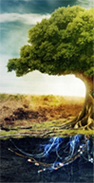

ВСТУП
Виконання комплексної курсової роботи (ККР) - це завершальний етап навчальної діяльності студентів четвертого курсу в університеті, на якому вирішуються такі завдання:
 – систематизація, поглиблення, закріплення та розширення теоретичних і практичних знань зі спеціальності 7(8) - електронні прилади та пристрої;– застосування знань при розв’язуванні конкретних науково-дослідницьких та інженерно-технічних задач;
– набуття навичок і уміння самостійної роботи, проведення експериментальних досліджень, використання засобів обчислювальної техніки при розв’язанні поставлених задач.
Результатом виконання комплексної курсової робіт є сукупність експериментальних або теоретичних результатів, які пов’язані з фізичними принципами роботи традиційних і сучасних електронних приладів та пристроїв, дослідженням властивостей матеріалів мікро- і наноелектроніки тощо.
У ККР, як правило, наводяться результати опрацювання літературних джерел та власних досліджень, опублікованих у вигляді статей або тез доповідей на конференціях.
У методичних вказівках викладені вимоги та рекомендації щодо оформлення ККР зі спеціальності 7(8).090802 і 7(8).05080201 – електронні прилади та пристрої, що відповідають прийнятим у Сумському державному університеті стандартам.